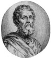

Yunan olimpiyatlarının yapıldığı Olimpia dağındaki bir kazı sırasında arkeologlar küçük bir kap buldular (1958). Kabın üzerine Yunan harfleriyle bir cümle yazılmıştı: “Ben Phidias’a aidim.”

2400 yıllık kap belki de Yunan heykeltıraşa ait olduğu kesin olarak bilinen tek kalıntıdır. Phidias (MÖ 490-430) kendi döneminde büyük bir üne sahip olsa da, altın kaplı başyapıtları olan Zeus ve Athena heykelleri de dahil olmak üzere tüm eserleri yok edilmiştir.
Phidias antik dünyada çok ünlüydü. Öyle ki Olimpia’daki Zeus heykeli antik dünyanın yedi harikasından biri sayılmaktadır. Arkeologlar Phidias’ın, kabını yaklaşık 13 metre yüksekliğindeki bu heykeli yaparken açtığı atölyede kaybettiğini tahmin etmektedirler (MÖ 430).
Phidias’ın hayatı hakkında bunun dışında pek az şey bilinmektedir. Atinalıdır. MÖ 5. yy’ın önemli bir bölümünde şehrin politik lideri olan Perikles’in (495-429) taraftarlarından biridir. Perikles sayesinde Parthenon’daki Athena heykelini yapma görevi Phidias’a verilmiştir. Bu heykel fildişinden yapılmış ve altınla kaplanmıştır. 11,58 metre uzunluğundadır. 900 yıl sonra bina talan edilene dek Panthenon’un merkezinde yer almıştır.
Phidias aynı zamanda binanın duvarlarını süsleyen heykellerin yapımına da eşlik etmiştir. Bunların büyük bölümü halen sağlam durumdadır. Bazıları Phidias’ın asistanlarının onun tasarımlarını temel alarak ürettikleri sanat eserleridir. Bu projenin beklenenden daha maliyetli oluşu Phidias’ı zor durumda bırakmıştır. Kullanılan altınların hesabını veremediği için bir süre hapis yatmıştır.
Zeus heykeli Phidias’ın tamamladığı bilinen son eseridir. Zeus, Antik Yunan Pantheon’undaki en önemli tanrıdır. Heykeli fildişi ve altından yapılmıştır. Heykelde elinde asası ile otururken tasvir edilmiştir. Yüzyıllar boyunca ilgi odağı olan heykel, madeni paraların üzerine bile işlenmiştir. Ziyarete gelen Yunan ve Roma yazarları onun güzelliği karşısında hayranlıklarını gizleyememişlerdir.
Tarihçi Plutarch’a göre (46-120) Phidias daha sonra tekrar tutuklanmış ve hapiste ölmüştür. Günümüzde kimi tarihçiler bu iddiaya şüpheyle yaklaşmaktadırlar.
Ek Bilgiler
1- Tapınak süsleri İngiltere ve Yunanistan arasında uzun tartışmalara neden olmuştur. 7. Elgin Kontu aristokrat Thomas Bruce (1766-1841), 1801 yılında heykelleri alarak Londra’ya getirmiştir. Osmanlı İmparatorluğu’ndan bunun için izin aldığını ileri sürmüştür. Ne var ki günümüzde Yunan liderler heykellerin taşınmasının yasadışı olduğunu iddia ederek İngiltere’den bunların iadesini talep etmektedirler. Mesele halen çözümlenememiştir.
2- Olimpia’daki Zeus heykeli yapıldıktan 800 yıl sonra, içinde bulunduğu tapınak, 426 yılında Bizans İmparatorluğu tarafından yerle bir edilince yok olmuştur.
3- Phidias’ın heykellerinin günümüze ulaşamamasının nedenlerinden biri de yapımında kullanılan malzemeler olabilir. Mermer yerine bronz ve altın kullanmıştır. Bunlar değerli metaller olduğundan heykeller ya çalınmış ya da eritilerek başka amaçlar için kullanılmıştır.